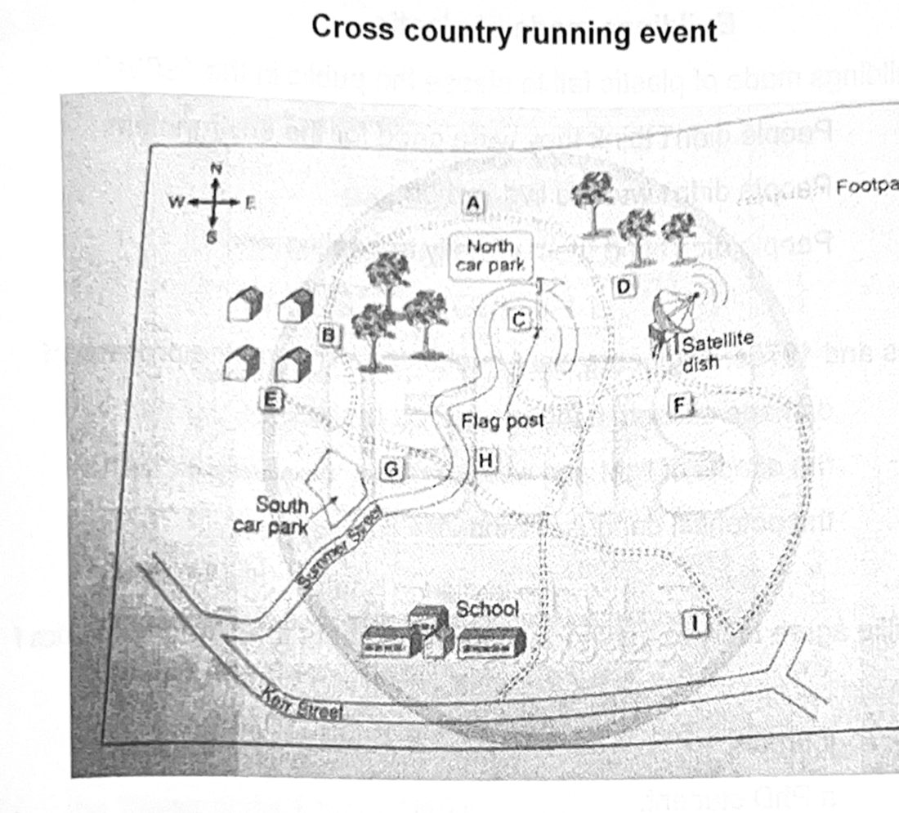

Phiếu trả lời Listening
Bấm số câu để nhảy tới câu đó. Bài làm được tự lưu trên máy này. Thời gian thi thật: khoảng 30 phút.
PART 1 Questions 1–10
Questions 1–5
Complete the notes below.
Write ONE WORD AND/OR A NUMBER for each answer
Get Away Tours
Office hours: 10am to 7pm
Cost of cheapest tour per person is $ (this month only)
Price includes accommodation and meals
The number of bicycle trips to choose from is
Most tours last a
This company offers holidays as well as bicycling
Travellers start their trips on
Questions 6–10
Complete the table below.
Write ONE WORD AND/OR A NUMBER for each answer
Overview of Bicycling Tours
| Number of nights | Terrain | Other attractions | Accommodation | |
|---|---|---|---|---|
| Eastern United States | Riverside and trails | Beautiful homes and | Hotels | |
| Southern California | Ten | Mountain trail and roads | Inviting food and good weather | Hotels and a |
📜 Lời thoại Part 1
Part 1.
You will hear a telephone conversation between a man who wants information about bicycling holidays and a travel agent. First you have some time to look at questions 1 to 5.
Now listen carefully and answer questions one to five.
Good morning. Thank you for calling Getaway Tours. I'm Sandra. How can I help you today? Hi Sandra.
I've got a lot of questions, but can you first tell me your office hours? Sure. We're open from 10 a.m. to 7 p.m. Thanks, Sandra. I saw your article in my favorite magazine last month, and I'd like more information about the different tours.
We have gotten a lot of calls about that article. I'm not surprised. Is it true that if I book a tour, the prices start at only $1,100 per person? Yes, that's a special offer for this month. Normally, they're from $1,400 going up to $2,000.
dollars and it includes accommodation and meals. This offer is for any of our 36 different bicycling tours. Well I am definitely interested in the bicycling tours but I thought there were only 30. Are all of them for a week? Most of them.
If bicycling is not your thing we also have walking tours to choose from. That's a lot of options. Are you aware that our trips all begin on Tuesday? It's great. It would give me Monday to pack.
How do you suggest I choose from so many options? Yes, it is tough to make a choice.
I would love to hear about your most popular tours.
Before you hear the rest of the conversation, you have some time to look at questions six to ten.
great shape for a hard ride. Do you have rides that are at the beginning or level? Sure! There's our Florida trip. That's 14 nights.
But I'd recommend our holiday on the east coast of the U.S. in an area known as the Autumn Route, which is just six nights. With short leisurely routes on trails by the riverside and through the forest, you have plenty of time to explore the landscape during your holiday. Wow! Seeing the changing colors of the leaves would be amazing. Yes, that's right.
You also have the option to stop at some outstanding homes and to see their gardens.
Whichever cycling holiday you choose, you usually spend two nights at each hotel and always have plenty of time to explore, rest, and sightsee as you wish. Could you tell me about one of your moderate rides? You never know. Maybe my wife and I will get into enough shape to be able to do one. Well, let me see.
Oh, this trip is actually 10 nights long. It travels through parts of Southern California. The ride begins on a mountain trail, and finally brings you down to the coastal roads. Oh yes, I see that here on your website.
Oh, that looks amazing! I like that we would have the opportunity to try some of the local cuisine. Yes, the cuisine in this area makes lavish use of colorful local produce. And then, you know, the great weather of this region is a great feature by itself. Do we stay in hotels on this trip?
You stay in hotels most of the way until the end. When you stay on a farm overlooking the sea. That's always really popular. Wow! Both trips sound fabulous!
How far in advance do I have to make reservations?
That is the end of Part 1. You now have one minute to check your answers to Part 1.
PART 2 Questions 11–20
Questions 11–14
Choose the correct letter, A, B or C.
Sports information for Parents
11 The school is looking for new team coaches and managers because
12 What does the speaker say is the most important thing a coach needs?
13 For parents who would like to coach rugby, one requirement is that they
14 In order to get a netball uniform, parents will need to
Questions 15–20
Label the map below.
Write the correct letter. A-I, next to questions 15-20.
Cross country running event

15 Drinks station
16 Crossing point
17 Halfway point
18 First aid
19 Rest area
20 Filming area
📜 Lời thoại Part 2
Part 2 You will hear the assistant principal of a primary school talking to a group of parents who have offered to help with sports activities First you have some time to look at questions 11 to 14.
Now listen carefully and answer questions 11 to 14.
Good evening parents and thank you for offering your help. I'm here to talk about the sports programs that the children are taking part in this term. Although we do do sport during class time, children often have extra activities before or after school or at weekends, and that's when we need you.
First up, we're looking for parents who would like to become team coaches or managers. We had some excellent people last year, but some of those parents now have other commitments. It's the Year 4 netball team, the year 5 and 6 rugby teams, and the Year 3 hockey team that need new people. Now, coaching. I know some parents might not be completely familiar with, say, rugby or netball rules, but don't let that put you off.
Obviously, knowledge of the game helps, but if you're keen, there are some coaching courses you can take before the training sessions for players begin. And these also get held throughout the whole season. What's really required is the right attitude. Are you the kind of person that can motivate kids and make the game seem exciting?
All the rugby training and matches are organised by North Shore Rugby Club. If you do volunteer to become a rugby coach, you'll need to go along to an important day that's coming up. That's on Saturday the 23rd. It takes place on the rugby grounds and it's when all the kids put their names down for a team and the organisers are on hand to give parents a bit more information.
Matches are on Saturday morning and training sessions on a Wednesday after school. Moving on to netball, matches and uniforms. Matches are on Monday at 4pm and take place at the North Harbour netball grounds.
And for uniforms, we've just ordered a new set from the sports store in town and parents must hire one from the school secretary for $15, which gets refunded at the end of the season.
Before you hear the rest of the talk, you have some time to look at questions 15 to 20.
Listen and answer questions 15 to 20.
Okay, some viewer kindly helping with the cross-country running event.
Children in years 3 to 6 will be running from school at the bottom of your map there. The route isn't marked on your map I'm afraid, but I'm going to point out some different places that need parent supervision.
The drink station is one. If you're handing out water, head to the North Car Park and the station will be set up on the other side of the road from it right by the flag post. Two or three parents will be needed to help out at the major crossing point just to make sure everybody's going the right way. So on the map there's that little footpath going up past the school then it splits into three directions. The crossing point is at the end of the left-hand path heading west just before you cross summer street.
Now we'll need a couple of parents at the half-way point to send the children in the right direction.
So there are four buildings on the far left-hand side. The halfway point is just to the right of these buildings. Just cheer the kids on. And if anyone has given up running, that's fine.
Okay, the teacher at our first aid post might need help sticking plasters on. The quickest way to get to first aid is to head up the footpath, next to school, and when you get to the second turning on the right, head down there, and it's sort of opposite the satellite dish.
What else?
The rest area is for children needing a break, and that's the place nearest the south car park, near the south And if any parent here is handy with a video camera, we'd really appreciate some help with filming the event.
This means heading up the footpath by the school, then keep going up. With the flag post on your left and the satellite dish on your right. And the filming spot is just there in front of the trees. Well I think that covers everything, but if you have any questions, please.
That is the end of Part 2. You now have 30 seconds to check your answers to Part 2.
PART 3 Questions 21–30
Questions 21–24
Choose the correct letter, A, B or C.
Buildings made of plastic
21 Why did buildings made of plastic fail to please the public in the 1960s?
22 In the 1960s and 1970s, engineers were unable to overcome the problem of
23 Luke and Millie agree to try to get more information about present-day plastics from
24 What do Luke and Millie agree about the article by Peterson?
Questions 25–30
What description applies to each of the following structures?
Choose SIX answers from the box and write the correct letter, A-G, next to questions 25-30.
Descriptions
A easy to transport
B not much room inside
C made from recycled materials
D designed to promote technology
E never actually built
F easy to keep clean
G very strong construction
Structures
25 the ‘house of the future’ (1957)
26 the ‘wonderhouse’ (1964)
27 spaceship houses (1968-78)
28 foam houses (1979-83)
29 plastic exhibition hall
30 New Zealand house
📜 Lời thoại Part 3
Part 3 You will hear two architecture students called Luke and Millie discussing their assignment about the use of plastic as a building material First you have some time to look at questions 21 to 24 Now listen carefully and answer questions 21 to 24
Hi Millie. Hi Luke. So we're here to talk over our first assignment on alternative building materials. Yeah, I think it will be really interesting to learn more about how plastic has been used. I found lots of information from the 1960s.
So did you find out why the idea of plastic buildings wasn't popular with the public at that time? It wasn't the materials' environmental credentials. The concept of plastic houses was just too futuristic. So you mean it was their appearance? No.
People liked their modern design, but the idea of that sort of building as a home just didn't appeal.
Right. I did some research on the kind of problems engineers had with the old plastics in the 1960s and 1970s. What did you learn? Well, firstly, because plastic doesn't weigh very much, the buildings weren't very good in windy weather. They managed to fix that by amending the shape of the buildings, but the real disadvantage was that when the plastic was exposed to the light, it developed fine cracks.
And when rain got into these cracks, the plastic would deform and lose its strength. Right. I wonder where we can find some more information about the situation nowadays.
Maybe we could ask one of the PhD students. I expect they'll be too busy. Yeah, that's true. Well, we could always use the internet. Maybe we should research more academic sources like the journals we have in the library.
Okay, that way we can reference everything properly at the end of the assignment. Have you read Peterson's article about plastic houses? Yeah, it was really good. But it didn't have enough illustrations of the houses. That was a shame.
They'd have been useful for us as examples in our presentation. I liked the way it was organised though. That was really clear. Yeah, and it wasn't too technical. but you did need to know a bit about plastic houses before you read it to get the most out of it. That's true.
Before you hear the rest of the discussion, you have some time to look at questions 25 to 30.
Now listen and answer questions 25 to 30.
Okay, well shall we start comparing our findings then? Sure, I'll make some notes.
Well, the earliest one I read about was a plastic house called The House of the Future that was built in 1957, though no one actually lived in it. It was on show at a theme park in America for ten years. After that, they demolished it, but they had a hard time. It was really built to last. But they couldn't break the plastic up.
Was that the one that had an ultrasonic dishwashing machine? Yes, that would still be pretty revolutionary today. Did you read about The Wonder House? It was designed in 1964 by an industrial designer called Alfred Noise.
Oh, the one with the roof like a sort of tent or an umbrella. That's right. The roof was made of fibre glass and it curved down to the ground at each corner, in closing a big central space. And the sides were filled with glass or plastic. It was a really innovative idea for the time, but noise only made a small model and the design wasn't implemented.
Hmm, pity. What about those spaceship houses they built between 1968 and 1978? Like flying sources. They built over a hundred of them. I don't know if I'd want to live in one.
The living area was quite limited, and they had really low ceilings. But they do look really futuristic, don't they? With their white walls and circular shape, yes. But the plastic houses I like are the foam houses they built between 1979 and 1983. They've got really curvy shapes.
They built them by spraying foam over a great big balloon. They were partly built to show what computers could do in the home, at things like controlling heat and light and so on. Quite new ideas at the time. And they were very well insulated as well, so they saved energy.
People were just beginning to get into that. I read about a plastic exhibition hall that can all be packed away in a relatively small container. You just put it on a truck and take it to wherever you want it, then inflate it. You know, fill it up with air and there's room for hundreds of people. And when the exhibition or whatever's over, you just take it down again, and you can reuse it again and again.
And there's a house in New Zealand that's built from household and industrial waste, like plastic boxes.
They say it's a much better construction material than bricks, from the point of view of insulation. Yes, they're using that idea to build houses in other parts of the world, too.
The end of Part 3. You now have 30 seconds to check your answers to Part 3.
PART 4 Questions 31–40
Complete the notes below.
Write ONE WORD ONLY for each answer.
Calotype photography in Britain and France
From Daguerreotype to Calotype
Daguerreotype was the first commercial photographic process.
Daguerreotype had a problem: the use of copper made it
William Talbot began looking for an alternative approach in the 1840s.
Talbot was not originally a photographer but an artist who specialised in
Talbot used paper instead of copper.
These calotype photographs were more because they weren’t so sharp.
French Calotype
In 1851, the first society for photographers was created
Gustave Le Gray became fascinated by calotype photography.
He carried out experiments and produced the first using a camera.
He developed equipment that was easier to use outside the
Calotype became famous because Le Gray produced about it.
People thought photography was more reliable than drawing.
It was used to record the work done on old
Photography was not ‘art’, according to
Summary
Photography was thought of as a so reflected the culture of the 1850s.
The use of new materials, particularly , led to new techniques.
📜 Lời thoại Part 4
Part Four You will hear part of a lecture about an early form of photography that developed in Britain and France called calotype photography First you have some time to look at questions 31 to 40 now listen carefully and answer questions 31 to 40
Morning, everyone. Welcome back to this series of lectures on the development of photography.
Last week, we looked at a type of photography called digerotype, the first commercially successful photographic process.
Today, we're going to look at how this was gradually replaced by a technique called calotype.
Degarotype was a major breakthrough but there were problems with it. In particular because the image was produced on a copper sheet it was expensive to create each photograph.
As a result during the 1840s a man named William Talbot began looking for an alternative approach. Talbot eventually became an influential figure. But he always said he was not a professional photographer.
In fact, he trained as an artist.
His greatest interest was painting.
And he only became involved with photography as a secondary interest.
Talbot spent many years trying to solve the problems associated with Deguera-type photography.
He tried a number of different approaches, and it took some time to find a success. alternative. But in the end, what he did was, instead of producing each photograph on a sheet of copper, he produced them on paper, and at the time, this was a great advance.
Talbot's technique, which he called calotype photography, had other advantages as well.
Maybe the most important, was that the pictures themselves weren't as sharp as the ones produced before. The sharpness had been a problem because it distorted everything. But this new calotype process produced images that were realistic compared to all earlier photographs.
Calotype photography was invented in Britain, but it was also popular with French photographers.
The 1850s were a time of rapid development in France, and photography was used to record these changes. One example of how important photography had become occurred in 1851 when the French government established a society to promote the interests of photographers, something that hadn't happened before.
To begin with, there were five members, and maybe the most important was a man called Gustav LeGrée. LaGrée became increasingly fascinated by the calotype process.
Most of all, he wanted to produce different types of image, so began a series of experiments to see how this might be done.
His greatest success was when he designed the first camera that was able to create enlargements, an important step forward.
Another of LaGrace Innovations was his work on the size of the equipment necessary to take photographs. Originally it was very heavy and difficult to move about, but LaGrée made it lighter and smaller.
This meant he could take photographs outdoors more easily rather than being limited to the studio, which had sometimes been the case until then. LaGrée produced numerous photographs during this period and was highly regarded among fellow photographers.
But his work also became famous among the others. the general public because he wrote a very popular series of books describing the calotype process and giving examples of his work.
The simple fact was that people liked photography. They thought it was reliable, especially compared to drawing, where the human hand might alter or exaggerate things.
This had various consequences, one of which was that photography was now often used to record the huge program of renovation work of historical buildings in France during the 1850s.
The camera doesn't lie, so people said.
As a result, the calotype process was admired not only by photographers, but increasingly by the government and by mainstream society.
However, debate still remained about whether photography could truly be called an art form like sculpture or drawing. Certainly, although the public liked it. in the opinion of critics, photography could not be compared to other established forms of art.
So, in summary, what can we say about calotype photography during this period?
One thing to re-emphasise is that the 1850s were a period of great development in Britain and France. The culture in both countries admired all new technological advances, and photography represented these ideas because it was considered to be a science by most people.
However, photographers didn't stop experimenting with new materials to improve the quality of their work.
Most of all, they were searching for ways to make images more permanent because calotype photographs tended to fade over time.
And in the end, they found that if the image was produced on glass, it lasted much longer. So, calotype photography was slowly replaced by other techniques which had greater law.
That is the end of Part 4. You now have one minute to check your answers to Part 4.
Phiếu trả lời Reading
Bấm số câu để nhảy tới câu đó. Bài làm được tự lưu trên máy này. Thời gian thi thật: 60 phút.
READING PASSAGE 1 Questions 1–13
You should spend about 20 minutes on Questions 1–13, which are based on Reading Passage 1 below.
The growth of agriculture
Some developments in Western agriculture from prehistory to the nineteenth century
Agriculture is the art and science of cultivating the soil, growing crops and raising livestock. It includes the preparation of plant and animal products for people to use and their distribution to markets.
Before agriculture became widespread, prehistoric people spent most of their lives hunting animals and gathered wild plants. Then, about 11,500 years ago, people gradually learned how to cultivate plants for food use and settled down to a life based on farming. Scholars are unsure why this shift to farming took place, but it may have occurred because of climate change. The earliest crop was most likely to have been rice, corn, or similar types of cereals. At around the same time, people also began herding and breeding animals. Sheep and goats were probably domesticated first followed by cattle and pigs. Eventually, people started keeping animals such as oxen for ploughing and transportation.
Agriculture enabled people to produce a surplus of food which could be eaten when crops failed or swapped for other goods. This exchange of goods was how trade began, and this in turn allowed people to work at other tasks unrelated to farming. Agriculture also kept formerly nomadic people near their fields and led to the establishment of permanent villages which became linked through trade. This development was so successful in some areas that cities emerged, and eventually entire civilisations arose. The earliest of these developed near the Tigris and Euphrates rivers in Mesopotamia - now Iraq - and along the River Nile in Egypt, eventually spreading to Europe, Asia and beyond. For thousands of years, agricultural development was very slow. Farmers cultivated small plots of land by hand using axes to clear away trees and sticks to break up and till the soil. However, over time, improved farming tools of bone, stone, bronze, and iron were developed. Around 7,500 years ago, farmers in Mesopotamia developed simple irrigation systems. By channeling water from streams onto their fields, farmers were able to settle in areas once thought to be unsuited to agriculture. In Mesopotamia and later in Egypt, people organized themselves and worked together to build these systems. As the Roman empire expanded, the Romans adapted the best agricultural methods of the people they conquered. They even wrote manuals about the farming techniques they observed in Africa, systems preserved nutrients in the soil. So, and Asia, and Europe. By 2,000 years ago much of the land in Earth’s population was reliant on agriculture.
In medieval times, European farmers adopted an open-field system of planting in which one field would be planted in spring, another in autumn, and one would be left unplanted, or fallow. This system preserved nutrients in the soil, so increasing crop production. Later in the 15th and 16th centuries, explorers travelling to Africa, Asia and the Americas began to introduce new varieties of plants into Europe. From the Americas, for example, they brought back agriculture products such as potatoes, tomatoes, maize and beans, which eventually became staple crops and an integral part of the European diet.
A period of major agricultural development began in the early 1700s for Great Britain and northern Europe. One of the most important of these developments was the horse-drawn seed drill, invented in England by Jethro Tull. Until that time, farmers sowed seeds by hand. Tull’s invention made rows of holes for the seeds and dropped them into the holes thus greatly improving the speed and efficiency of the process. By the end of the 18th century, seed drilling was widely practiced in many countries across Europe.
Along with new machines, there were several other important advances in farming methods. By selectively breeding their livestock - deliberately breeding animals with a certain combination of desirable qualities from chosen parent animals - farmers increased both the size of their herds and the productivity of their livestock. An early example of
this is the Leicester sheep, an animal selectively bred in England for its quality meat and long, coarse wool. Then, in Austria in 1866, a monk and science teacher by the name of Gregor Mendel published his studies of heredity, which were the first to show how traits are passed from one generation of plants to the next. Mendel is widely recognised as the founder of the science of genetics, and his experiments paved the way for the selective breeding of plants and the improvement of crops through genetics.
Another major agricultural breakthrough came from the field of chemistry. For thousands of years, farmers had relied on natural fertiliser - materials such as animal or bird waste, wood ash, or ground bones to replenish or increase nutrients in the soil. Then, in the early 1800s, scientists discovered which elements were most essential to plant growth: nitrogen, phosphorus, and potassium. This led to the manufacture of chemical fertilisers based on nitrates and phosphates, which greatly increased crop yields. With the population of Europe doubling during the 1800s - from around 200 million at the beginning of the century to around 400 million mouths to feed at its end - farming had finally become big business.
Questions 1–7
Complete the notes below.
Choose ONE WORD AND/OR A NUMBER from the passage for each answer.
Write your answers in boxes 1-7 on your answer sheet.
Farming in the ancient world
prehistoric times - people collected wild plants, and to get meat
11,500 years ago - people began growing crops, probably e.g. rice or corn
people started to domesticate various types of animals.
creation of a
led to the exchange of goods and the beginnings of trade, which resulted in the emergence of cities and the growth of
farmers gradually began using better made from different materials
systems of providing fields with a supply of were invented in Mesopotamia
years ago, a large proportion of people worldwide had become dependent on farming
Questions 8–13
Do the following statements agree with the information given in Reading Passage 1?
In boxes 8-13 on your answer sheet write:
TRUE if the statement agrees with the information
FALSE if the statement contradicts the information
NOT GIVEN if there is no information on this
8 The Romans adapted their own farming methods for use in Africa and Asia.
9 The medieval open-field system increased food production by allowing European farmers to have crops growing continuously in all their fields.
10 European eating habits changed as a result of international exploration in the 15th and 16th centuries.
11 During the 18th century many European countries created their own versions of the seed drill.
12 Selective breeding methods helped European farmers to produce more animals.
13 Many farmers continued to use natural methods of fertilising their land, even after the development of chemical fertilisers.
READING PASSAGE 2 Questions 14–26
You should spend about 20 minutes on Questions 14–26, which are based on Reading Passage 2 below.
The aerofoil
The shape of an aeroplane’s wing plays a key role in the achievement of flight
A The magic of flight lies in the interaction between the wings of a plane and the air. If the shape of the wing - the aerofoil - is right and the plane is moving fast enough, the wing is pushed into the air as it slices through it. It seems like magic because our all-too-literal brains tell us that because air is invisible it must be insubstantial too. But air is not nothing; air is a substance completely comprised of gases. If you think of a wing slicing through water rather than air, you can begin to imagine how air might provide the upward push that aeronautical scientists call lift. The key to the aerofoil’s lift is the flow of air around it. Air flows around an aerofoil because the aerofoil is moving, just as the bow of a boat creates a flow in still water. What matters is the way the curved shape of the aerofoil diverts the flow around it.
B To really see why, it is worth carrying out an experiment with knives and spoons under a running tap. Hold the blade of a knife vertically in a stream of water and the water flows straight and undisturbed past the blade. Twist the blade slightly at an angle to the stream and you can see how it begins to block and split the flow, breaking it into turbulent eddies - and you may see the turbulence increase as you increase the angle of the knife. Hold the convex side of a spoon under the stream instead, however, and something different happens. The spoon diverts the water but does not disrupt it. You have to twist the spoon at a much steeper angle before it disrupts the flow. Like the curvature of the spoon, the curvature of the aerofoil ensures the flow of the air around it is diverted but not broken up.
C The curvature of the spoon, like that of the aerofoil is crucial. Far above or below the aerofoil, the airflow is undisturbed, but the closer the air is to the aerofoil the more the flow is bent to follow the aerofoil’s shape. As the airflow changes direction, it begins to push in a different direction too, and the more it bends, the greater the change. Right on top and underneath the aerofoil, the airflow is turned effectively at right angles, pushing the aerofoil upwards and creating lift. Since it is the way that the airflow is distorted that creates lift, it is evident that the pattern of the airflow distortion is critical. This depends on the angle that the aerofoil moves through the air - its angle of attack; the steeper the angle, the greater the lift.
D The overall shape of the aerofoil is also crucial. A gentle, thin, curve provides the best lift, and this is the shape of the wings of birds as well as the shape that the flexible wings of hang-gliders and microlights bend into. But it is hard to make a large wing strong enough in this shape. So, the wings of most large aircraft are, in profile, the shape of a narrow teardrop. This shape does not give us much lift, which is why the wings have to be huge. They are hollow inside, which provides room for fuel storage. There are also flaps on the rear of the wings that can be swung up or down to alter the aerofoil curvature and its effective angle of attack and so allow the pilot to climb or descend.
E Of course the wings of birds were the original inspiration for the aerofoil. Countless thinkers in the distant past must have marvelled at birds gliding through the sky and guessed that they were held aloft by their outstretched wings. And perhaps some it was the shape of the wings that mattered, such as the 5th-century Greek philosopher Archytas who is said to have built a mechanical bird that flew. Brave pioneers like the 9th-century Cordoban inventor, Abbas Ibn-Firnas, were even bold enough to strap artificial wings to their arms and leap from high places. Ibn-Firnas was lucky enough to glide through the air for ten minutes before crash-landing and almost breaking his neck.
F Yet the first person who really began to explore the shape of wings methodically was the British engineer Sir George Cayley (1773-1857) and it is to Cayley that we owe the idea of the curved aerofoil. Cayley was an extraordinary and inventive man, and he is credited with developing self-righting lifeboats, wire-spoked wheels, seatbelts and even an internal combustion engine. But it is mostly as the father of aviation that he is remembered, and it is he who pioneered much of the theory of flight. He carried out analyses of what shapes and angles produced the greatest lift. In his analyses, he developed the names of the key forces involved in flight, lift, drag and thrust - which still play an important role today. Flight involves a balance between these four forces, but for a successful aeroplane you need both power and control, which is why it took another half-century before Orville and Wilbur Wright made their historic flight at Kittyhawk in the USA on 17th December 1903.
Questions 14–19
Reading Passage 2 has six paragraphs, A-F.
Choose the correct heading for each paragraph from the list of headings below.
Write the correct number, i-vii, in boxes 14-19 on your answer sheet.
List of Headings
i The earliest attempts to achieve human flight
ii Public reaction to the pioneers of flight
iii A practical demonstration of an aeronautical principle
iv The importance of angles in achieving lift
v A misunderstanding about the nature of air
vi The discovery of several key factors affecting wing design
vii Additional wing features that help control flight
14 Paragraph A
15 Paragraph B
16 Paragraph C
17 Paragraph D
18 Paragraph E
19 Paragraph F
Questions 20–24
Complete the summary below.
Choose ONE WORD ONLY from the passage for each answer.
Write your answers in boxes 20-24 on your answer sheet.
Designing aeroplane wings
Hang-gliders, microlights, small planes and birds share the same wing shape - a curve which provides the maximum amount of But while these wings can support an individual person, they cannot support the weight of a huge aircraft. In fact, the enormous wings of a modern plane look like a thin when viewed from the side. Space is not wasted because the needed to power a flight is kept inside each wing. The pilot can adjust the which are located at the of the wings. This changes the aerofoil’s curvature as well as the angle of attack and causes the plane to rise or descend.
Questions 25–26
Choose TWO letters, A–E.
Write the correct letters in boxes 25 and 26 on your answer sheet.
25–26 Which TWO things does the writer state about George Cayley?
READING PASSAGE 3 Questions 27–40
You should spend about 20 minutes on Questions 27–40, which are based on Reading Passage 3 below.
Looking for inspiration
Helen Phillips asks what makes one person more creative than another
People have speculated about their own creativity for centuries - perhaps ever since we became able to think about thinking. Whatever creativity is, it is thinking that results in new ideas and new ways of doing things. The only bit of the creative process we actually know about is the moment of insight, yet creative ideas and projects may incubate beyond our awareness for months. Not surprising, then, that creativity has long eluded scientific study.
In the early 1970s, it was still seen as a type of intelligence. But when more subtle tests of IQ and creative skills were developed in the 1970s, particularly by the father of creativity testing, Paul Torrance, it became clear that the link was not so simple. Creative people are intelligent, in terms of IQ tests at least, but only averagely or just above. While it depends on the discipline, in general, having beyond a certain level IQ does not help boost creativity.
Because of the difficulty of studying the actual process, most early attempts to study creativity concentrated on personality. According to creativity specialist Mark Runco of California State University, the creative personality tends to place a high value on aesthetic qualities and have broad interests, providing lots of resources to draw on and knowledge to recombine into novel solutions. ‘Creatives’ have an attraction to complexity and an ability to handle conflict. They are also highly self-motivated, perhaps even a little obsessive, when it comes to realising their ambitions.
But there may be a price to pay for having a creative personality. For centuries, a link has been made between creativity and mental illness. Psychiatrist and author Kay Redfield Jamison of Johns Hopkins University, who herself has bipolar disorder, found that established artists are significantly more likely to have mood disorders. But she also suggests that a switch of mood state might be the key to triggering a creative event, rather than the negative mood itself.
Jordan Peterson, a psychologist at the University of Toronto, has carried out work that suggests that the brains of creative people are more open to incoming stimuli than less creative types. Our senses are continuously feeding a mass of data into our brains, which have to block most of it to save us from being snowed under. Peterson calls this process latent inhibition and argues that people who have less of it, and who have a reasonably high IQ, can juggle more of the data, and so may be open to more ideas.
But what of the creative act itself? One of the first studies of the creative brain at work was by Colin Martindale, a psychologist from the University of Maine. Back in 1978, he used a network of scalp electrodes to record the pattern of brain waves as people made up stories. Creativity, he showed, has two stages: inspiration and elaboration, each characterized by very different states of mind. While people were dreaming up their stories, he found their brains were surprisingly quiet. The dominant activity was alpha waves, which is the same sort of brain activity as in some stages of dreaming or rest. This could explain why sleep and relaxation can help people be creative.
However, when these quiet-minded people were asked to work on their stories, the alpha wave activity dropped off and the brain became busier, revealing increased cortical arousal, and more organised thinking. Strikingly, it was the people who showed the biggest difference in brain activity between the two stages who produced the most creative storylines. Nothing in their background brain activity marked them as creative or uncreative. ‘It’s as if the less creative person can’t move up a gear,’ says Guy Claxton, a psychologist at the University of Bristol. ‘Creativity requires different kinds of thinking. Very creative people move between these states intuitively.’
Researchers are now trying to identify some of the specific anatomy of creativity. Brain studies of people with particular types of creativity show, perhaps not surprisingly, that active areas are determined by the specialist knowledge being used. Imagery, spatial awareness, language and so on - whatever the skill, it is localised to some extent to a particular brain part or parts. But it’s not just these speciality areas that are active. Using information creatively needs coordination. ‘Creative synthesis requires a new pattern, to put the brain in a state where many areas are simultaneously active,’ says Claxton. When we concentrate in a less creative way, such as when reading the gas bill, there are fewer active centres and less synthesis.
But to be truly creative needs more than just the right personality and the right brain areas and networks. It’s about using them effectively. Skills, situations and our social setting can shape our creativity just as dramatically as the brain resources we are born with. The most creative people also use the different rhythms of the day, the weekends and the holidays to help alter focus and brain state. They may spend two hours at their desk, then go for a walk, because they know that pattern works for them.
Another often forgotten aspect of creativity is social. Vera John-Steiner of the University of New Mexico says that to be really creative you need strong social networks and trusting relationships, not just active neural networks. One vital characteristic of a ‘creative’, she says, is that they have at least one other person in their life who doesn’t think they are completely mad!
Questions 27–32
Look at the following statements (Questions 27-32) and the list of people below.
Match each statement with the correct person, A-G.
Write the correct letter, A-G, in boxes 27-32 on your answer sheet.
NB You may use any letter more than once.
27 Creative people are receptive to the immense amounts of information that the brain has to deal with.
28 Creativity requires numerous parts of the brain to be active at the same time.
29 Creative people engage in, and are well informed about, a wide range of subjects.
30 Creative people may have unstable personalities.
31 Creative people are driven to achieve the goals they set themselves.
32 Creative people need support from others.
List of People
A Paul Torrance
B Mark Runco
C Kay Redfield Jamison
D Jordan Peterson
E Colin Martindale
F Guy Claxton
G Vera John-Steiner
Questions 33–36
Complete the summary below.
Choose NO MORE THAN TWO WORDS from the passage for each answer.
Write your answers in boxes 33-36 on your answer sheet.
Colin Martindale carried out research into the creative brain at work. For his study, volunteers had a series of placed on their heads which were used to monitor brain activity while they made up stories. Martindale demonstrated that creativity consisted of and ………………………. phases. In the first of these, the brain was mostly inactive except for and this corresponds to what takes place during dreaming or relaxation. In the second phase, when the volunteers worked on their stories, however, their brains became a lot busier. Interestingly, the most creative stories were produced by those volunteers with the greatest in brain activity between the two phases.
Questions 37–40
Do the following statements agree with the information given in Reading Passage 3?
In boxes 37-40 on your answer sheet, write:
TRUE if the statement agrees with the information
FALSE if the statement contradicts the information
NOT GIVEN if there is no information on this
37 People with very high IQs are more likely to be creative than those with average IQs.
38 Society tends to value aesthetic skills highly.
39 There can be disadvantages to having a creative personality.
40 Language skills are more important than spatial awareness in any form of creativity.